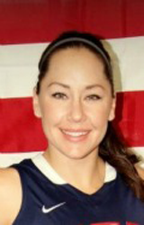

Paralymic Athlete, Wheelchair Basketball
College: University of Arizona '06, Special Education Rehab and School Psychology
Paralympic Experience:
- 2008 Paralympic Games - gold medal
- 2010 Paralympic Winter Games - two gold medals, one silver, one bronze
- 2012 Paralympic Games
- Career Highlights:
- 2011 Parapan American Games, gold medal
- 2011 World Champion (Downhill, Super-G)
- 2011 Paralympic Athlete of the Year
- 2011 Colorado Sports Woman of the Year
- 2011 NWBA National Champion
- 2009 National Champion (Downhill & Super-G)
- 2007 Parapan American Games, gold medal
- 2006 IWBF World Championships, silver medal
- Three-Time ESPY Nominee (2010, 2011, 2012)
Facts: Daughter of David and Susan Nichols... raised by grandparents Dave and Joan Vilven... One brother, David and two sisters, Jovan and Julianne... Earned a Master's Degree from the University of Alabama in 2008... First female American athlete to win gold medals in both summer and winter Paralympic Games... Hobbies include skiing, paddble boarding, and yoga.